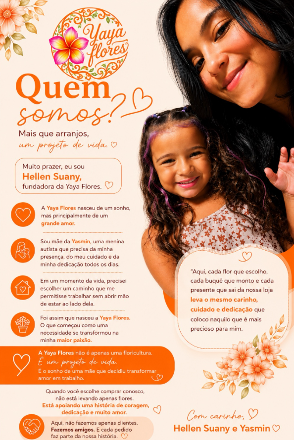

Amor em forma de flor.
Flores, cestas e presentes preparados com carinho para transformar momentos especiais em lembranças inesquecíveis.

O que você procura hoje?
Um atalho para encontrar algo especial sem perder tempo.
Um carinho para cada momento
Comece pela ocasião. A gente cuida do resto com delicadeza.
Escolha seu presente
Uma seleção demonstrativa pronta para receber os produtos reais da Yaya.
Disponíveis hoje
Não sabe o que escolher?
Conte um pouquinho sobre a ocasião e descubra, em poucos passos, presentes que combinam com a pessoa, o momento e o que você procura. Uma forma simples e especial de encontrar a escolha certa.

Flores
Porque alguns sentimentos merecem flores.
Para celebrar, agradecer, demonstrar amor ou simplesmente fazer alguém sorrir. A beleza está no presente — e também na intenção.
Surpreender alguém →Uma história que nasceu do amor.
A Yaya Flores nasceu de um sonho e, principalmente, de um grande amor. Sua fundadora, Hellen Suany, buscava um caminho profissional que permitisse trabalhar sem abrir mão de estar ao lado da filha, Yasmin.
O que começou como uma necessidade se transformou em paixão. Hoje, cada flor escolhida, cada buquê montado e cada presente preparado carrega cuidado e dedicação.
“A Yaya Flores não é apenas uma floricultura. É um projeto de vida.”
Hellen Suany e Yasmin

Carinho em cada detalhe
Quem recebe, sente. Quem presenteia, também.
Espaço pronto para inserir avaliações verdadeiras dos clientes.
O layout já está preparado para mostrar nome, avaliação, comentário e ocasião sem publicar testemunhos inventados.
Como receber seu pedido?
Escolha a forma mais conveniente e confirme os detalhes diretamente com a equipe da Yaya.
Delivery
Consulte a equipe para verificar disponibilidade de entrega para sua região.
Consultar entrega →Retirada no Centro
Ao lado do Casarão do Açaí, atrás da Rodoviária do Centro, em Maricá.
Falar com a Yaya →Retirada no Centro de Maricá
Ao lado do Casarão do Açaí, atrás da Rodoviária do Centro. Use o mapa como referência e confirme os detalhes da retirada com a equipe.
Confirmar localizaçãoFormas de pagamento
Aceitamos Mumbuca, Pix e todos os cartões de crédito. A confirmação e o pagamento são combinados diretamente com a Yaya.


Antes de escolher, talvez você queira saber.
Informações objetivas, sem inventar políticas que precisam ser confirmadas pela equipe.
Quem você gostaria de fazer sorrir hoje?
Escolha um presente ou conte sua ideia. A Yaya prepara tudo com carinho.